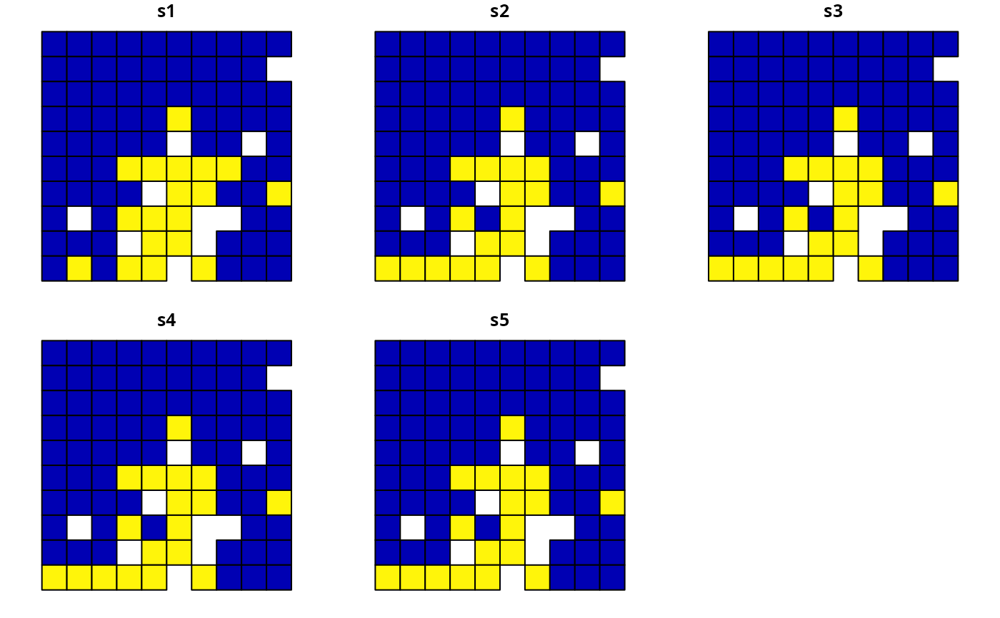
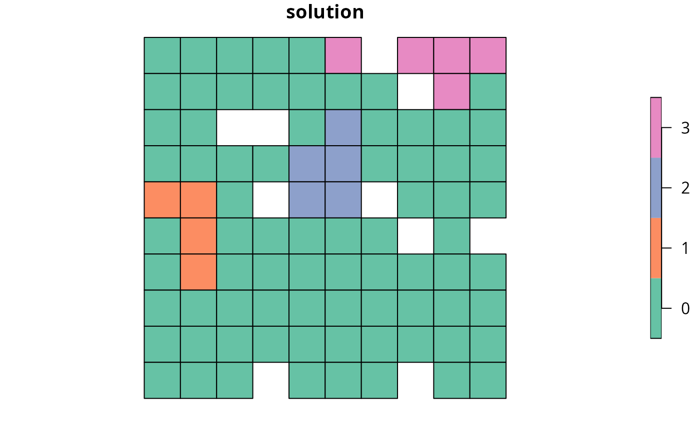
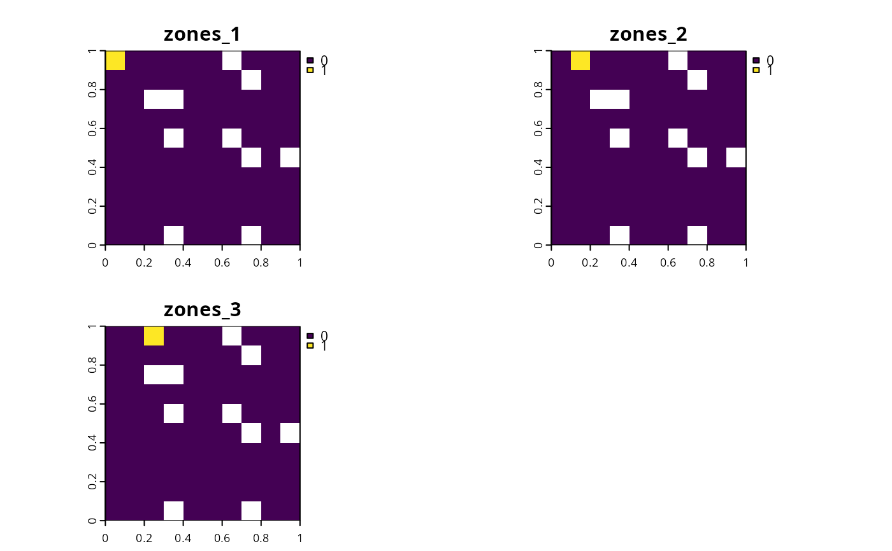
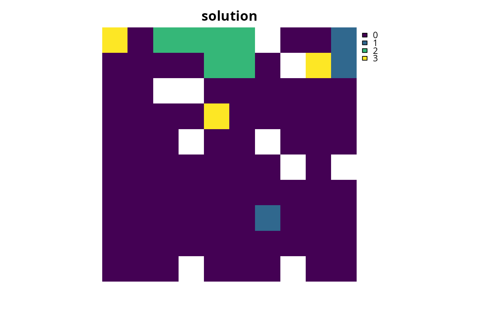

Add constraints to a conservation planning problem to ensure
that specific planning units are not selected
(or allocated to a specific zone) in the solution. For example, it may be
useful to lock out planning units that have been degraded and are not
suitable for conserving species. If specific planning units should be locked
in to the solution, use add_locked_in_constraints(). For
problems with non-binary planning unit allocations (e.g., proportions), the
add_manual_locked_constraints() function can be used to lock
planning unit allocations to a specific value.
Usage
add_locked_out_constraints(x, locked_out)
# S4 method for ConservationProblem,numeric
add_locked_out_constraints(x, locked_out)
# S4 method for ConservationProblem,logical
add_locked_out_constraints(x, locked_out)
# S4 method for ConservationProblem,matrix
add_locked_out_constraints(x, locked_out)
# S4 method for ConservationProblem,character
add_locked_out_constraints(x, locked_out)
# S4 method for ConservationProblem,Spatial
add_locked_out_constraints(x, locked_out)
# S4 method for ConservationProblem,sf
add_locked_out_constraints(x, locked_out)
# S4 method for ConservationProblem,Raster
add_locked_out_constraints(x, locked_out)
# S4 method for ConservationProblem,SpatRaster
add_locked_out_constraints(x, locked_out)Arguments
- x
problem()object.- locked_out
Object that determines which planning units that should be locked out. See the Data format section for more information.
Value
An updated problem() object with the constraints added to it.
Data format
The following formats can be used to lock in planning units.
locked_outas anumericvectorcontaining
numericvalues that indicate which planning units should be locked for the solution. Ifxhasdata.frameplanning units, then these values must refer to values in theidcolumn of the planning unit data. Alternatively, ifxhassf::st_sf()ormatrixplanning units, then these values must refer to the row numbers of the planning unit data. Additionally, ifxhasnumericvector planning units, then these values must refer to the element indices of the planning unit data. Finally, ifxhasterra::rast()planning units, then these values must refer to cell indices. Note that this format is available for problems that contain a single zone.locked_outas alogicalvectorcontaining
TRUEand/orFALSEvalues that indicate each if planning units should be locked in the solution. Note that the vector should have aTRUEorFALSEvalue for each and every planning unit in the argument tox. This argument is only compatible with problems that contain a single zone.locked_outas amatrixobjectcontaining
logical(i.e.,TRUEorFALSE) values that indicate if certain planning units should be locked to a specific zone in the solution. Each row corresponds to a planning unit, each column corresponds to a zone, and each cell indicates if the planning unit should be locked to a given zone.locked_outas acharactervectorcontaining column name(s) for the planning unit data in
xthat indicate if planning units should be locked for the solution. This format is only compatible if the argument toxhassf::st_sf()ordata.frameplanning units. The columns must havelogical(i.e.,TRUEorFALSE) values indicating if planning units should be locked for the solution. For problems that contain a single zone, the argument todatamust contain a single column name. Otherwise, for problems that contain multiple zones, the argument todatamust contain a column name for each zone.locked_outas asf::sf()objectcontaining geometries that will be used to lock planning units for the solution. Specifically, planning units in
xthat spatially intersect withywill be locked (perintersecting_units()). Note that this option is only available for problems that contain a single management zone.locked_outas aterra::rast()objectcontaining cells used to lock planning units for the solution. Specifically, planning units in
xthat intersect with cells that have non-zero and non-NAvalues are locked. For problems that contain multiple zones, thedataobject must contain a layer for each zone. Note that for multi-band arguments, each cell must only contain a non-zero value in a single band. Additionally, if the cost data inxis aterra::rast()object, we recommend standardizingNAvalues in this dataset with the cost data. In other words, the cells inxthat haveNAvalues should also haveNAvalues in the locked data.
See also
See constraints for an overview of all functions for adding constraints.
Other constraints:
add_boundary_constraints(),
add_contiguity_constraints(),
add_feature_contiguity_constraints(),
add_linear_constraints(),
add_locked_in_constraints(),
add_mandatory_allocation_constraints(),
add_manual_bounded_constraints(),
add_manual_locked_constraints(),
add_neighbor_constraints()
Examples
# \dontrun{
# set seed for reproducibility
set.seed(500)
# load data
sim_pu_polygons <- get_sim_pu_polygons()
sim_features <- get_sim_features()
sim_locked_out_raster <- get_sim_locked_out_raster()
sim_zones_pu_raster <- get_sim_zones_pu_raster()
sim_zones_pu_polygons <- get_sim_zones_pu_polygons()
sim_zones_features <- get_sim_zones_features()
# create minimal problem
p1 <-
problem(sim_pu_polygons, sim_features, "cost") %>%
add_min_set_objective() %>%
add_relative_targets(0.2) %>%
add_binary_decisions() %>%
add_default_solver(verbose = FALSE)
# create problem with added locked out constraints using integers
p2 <- p1 %>% add_locked_out_constraints(which(sim_pu_polygons$locked_out))
# create problem with added locked out constraints using a column name
p3 <- p1 %>% add_locked_out_constraints("locked_out")
# create problem with added locked out constraints using raster data
p4 <- p1 %>% add_locked_out_constraints(sim_locked_out_raster)
# create problem with added locked out constraints using spatial polygon data
locked_out <- sim_pu_polygons[sim_pu_polygons$locked_out == 1, ]
p5 <- p1 %>% add_locked_out_constraints(locked_out)
# solve problems
s1 <- solve(p1)
s2 <- solve(p2)
s3 <- solve(p3)
s4 <- solve(p4)
s5 <- solve(p5)
# create single object with all solutions
s6 <- sf::st_sf(
tibble::tibble(
s1 = s1$solution_1,
s2 = s2$solution_1,
s3 = s3$solution_1,
s4 = s4$solution_1,
s5 = s5$solution_1
),
geometry = sf::st_geometry(s1)
)
# plot solutions
plot(
s6,
main = c(
"none locked out", "locked out (integer input)",
"locked out (character input)", "locked out (raster input)",
"locked out (polygon input)"
)
)

# reset plot
par(mfrow = c(1, 1))
# create minimal multi-zone problem with spatial data
p7 <-
problem(
sim_zones_pu_polygons, sim_zones_features,
cost_column = c("cost_1", "cost_2", "cost_3")
) %>%
add_min_set_objective() %>%
add_absolute_targets(matrix(rpois(15, 1), nrow = 5, ncol = 3)) %>%
add_binary_decisions() %>%
add_default_solver(verbose = FALSE)
# create multi-zone problem with locked out constraints using matrix data
locked_matrix <- as.matrix(sf::st_drop_geometry(
sim_zones_pu_polygons[, c("locked_1", "locked_2", "locked_3")]
))
p8 <- p7 %>% add_locked_out_constraints(locked_matrix)
# solve problem
s8 <- solve(p8)
# create new column representing the zone id that each planning unit
# was allocated to in the solution
s8$solution <- category_vector(sf::st_drop_geometry(
s8[, c("solution_1_zone_1", "solution_1_zone_2", "solution_1_zone_3")]
))
s8$solution <- factor(s8$solution)
# plot solution
plot(s8[, "solution"], main = "solution", axes = FALSE)

# create multi-zone problem with locked out constraints using column names
p9 <-
p7 %>%
add_locked_out_constraints(c("locked_1", "locked_2", "locked_3"))
# solve problem
s9 <- solve(p9)
# create new column in s8 representing the zone id that each planning unit
# was allocated to in the solution
s9$solution <- category_vector(sf::st_drop_geometry(
s9[, c("solution_1_zone_1", "solution_1_zone_2", "solution_1_zone_3")]
))
s9$solution[s9$solution == 1 & s9$solution_1_zone_1 == 0] <- 0
s9$solution <- factor(s9$solution)
# plot solution
plot(s9[, "solution"], main = "solution", axes = FALSE)
# create multi-zone problem with raster planning units
p10 <-
problem(sim_zones_pu_raster, sim_zones_features) %>%
add_min_set_objective() %>%
add_absolute_targets(matrix(rpois(15, 1), nrow = 5, ncol = 3)) %>%
add_binary_decisions() %>%
add_default_solver(verbose = FALSE)
# create multi-layer raster with locked out units
locked_out_raster <- sim_zones_pu_raster[[1]]
locked_out_raster[!is.na(locked_out_raster)] <- 0
locked_out_raster <- locked_out_raster[[c(1, 1, 1)]]
names(locked_out_raster) <- c("zones_1", "zones_2", "zones_3")
locked_out_raster[[1]][1] <- 1
locked_out_raster[[2]][2] <- 1
locked_out_raster[[3]][3] <- 1
# plot locked out raster
plot(locked_out_raster)

# add locked out raster units to problem
p10 <- p10 %>% add_locked_out_constraints(locked_out_raster)
# solve problem
s10 <- solve(p10)
# plot solution
plot(category_layer(s10), main = "solution", axes = FALSE)

# }